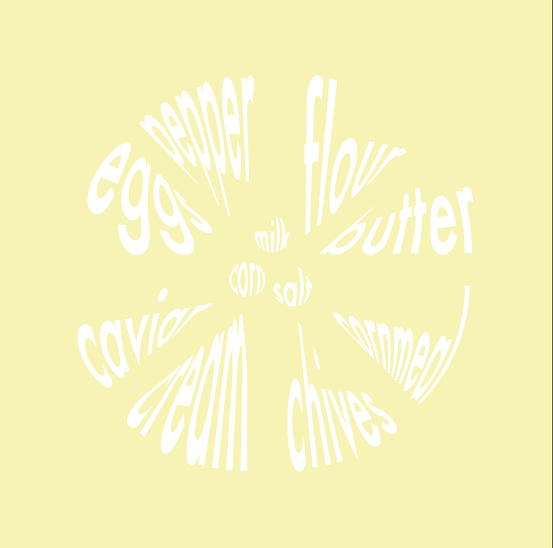
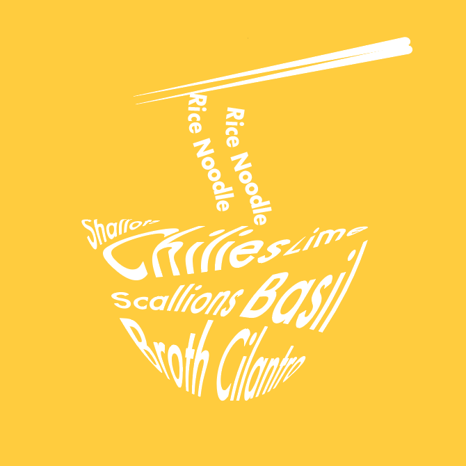
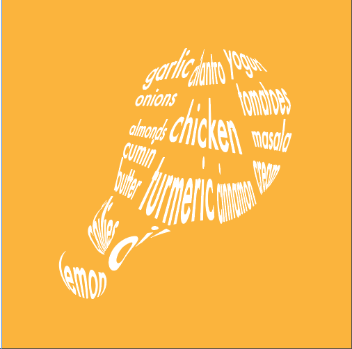
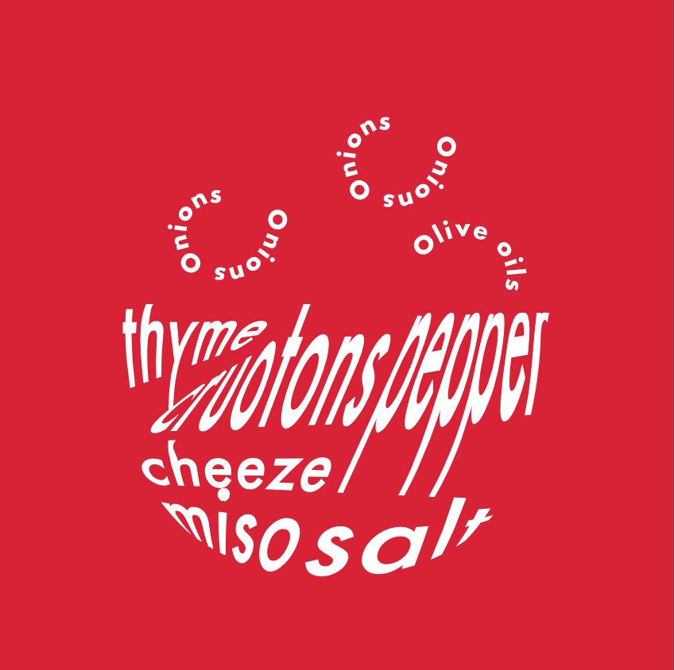
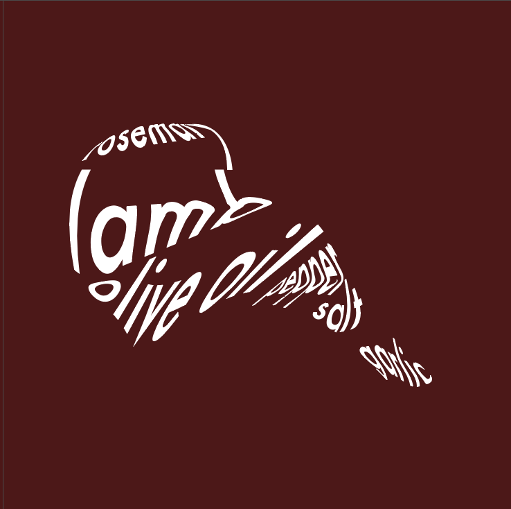

mosccato
Moscato pairs particularly well with spicy Asian fare (think Thai, Szechuan, Korean), as the sweet from the wine tames the heat in the food.

This book is designed for people who wants to enjoy their relaxing moment in their daily lives with a glass a wine, paired with a perfect food. Wine not only uplifts people’s moods, but also supports our body, when consumed with right amount. To maximize its benefits, the importance of pairing of food and wine it is needless to say. Wines are divide to specific categories, such as red wines, white wines, rose, champagne, and dessert wine, based on the method and types of grapes that were used. Since each wine has different tastes in sweetness, acidity, body, and fruity, flavors of wines are identical and they have specific pairing to each food. The number one guideline is to bring out the best characteristics of a wine. I would like to introduce few simple guidelines when finding a perfect fair for your wine.
Just about anything that's salty, fried or fishy will pair magically with Champagne. Don't just use it as an aperitif, try it with the main course as well.
Off-dry Riesling wines make a great pairing to spicy Indian and Asian cuisines and do excellently alongside duck, pork, bacon, shrimp and crab.
A wonderful choice with herb-driven sauces over chicken, tofu or fish dishes, matched with feta or chèvre, and paired with Thai and Vietnamese cuisine.
Moscato pairs particularly well with spicy Asian fare (think Thai, Szechuan, Korean), as the sweet from the wine tames the heat in the food.
A very versatile food pairing wine given it's higher high acidity and lower tannin. Pinot Noir pairs particularly well with duck, chicken, pork, and mushrooms.
Darker meats and exotic spices bring out the fruit notes of Syrah. Try it with Lamb Shawarma, Gyros, Asian 5-spice pork and even Indian tandoori meats.
